The Learning Museum is an interactive environment that helps you learn about Stingray's core systems. Each room in the museum is dedicated to one concept and includes live examples. This tutorial highlights four concepts that are included in the museum: customizing your project's main menu, levels of detail, creating light masks, and particle effects.
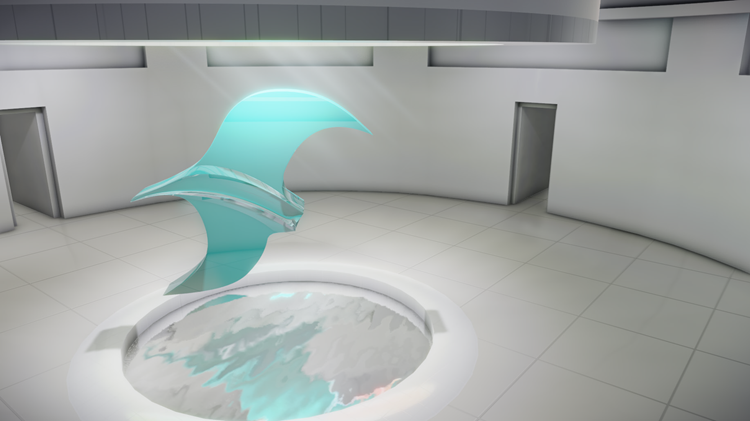
Every Stingray project starts with a main menu that lets you open or quit the application. You can customize the menu's look and feel using Scaleform Studio.
For more information, see Integrating a main menu in your Stingray project using Lua.
By default, the basic project template includes main menu level that you can work with.
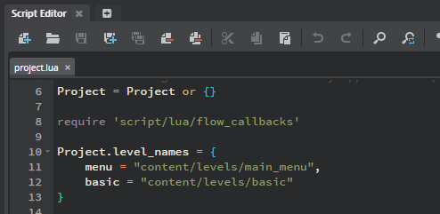
The following image shows the main menu with a new 3d background, however the text is difficult to read. You can make changes to the text and formatting using Scaleform Studio.
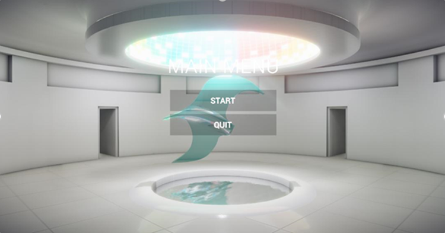
Scaleform Studio opens. Scaleform comes with different interaction templates like buttons and sliders, called widgets. The simple_menu project already has two buttons that can be customized to fit your needs.
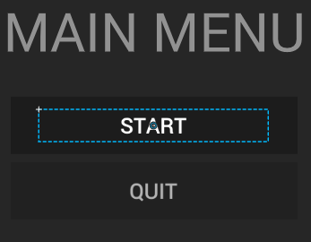
The Start button is a layer, with customizable properties including text formatting and effects for various button states.
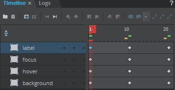
Tip: Select File > Import to import your own TIFF font to any folder in your Scaleform Studio Project.
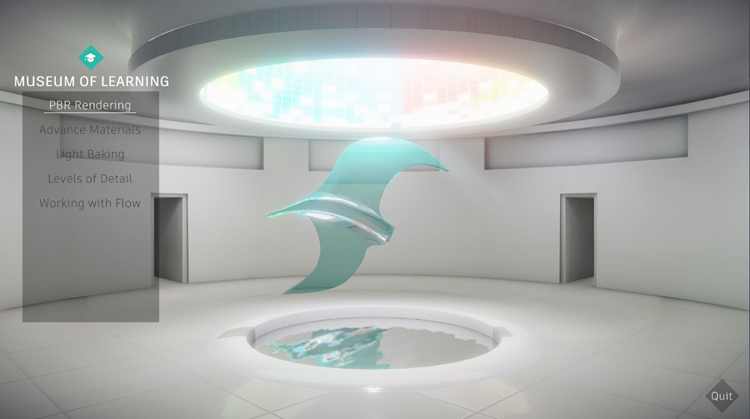
For more information on working in the Scaleform Studio Editor, see the Scaleform Studio Help.
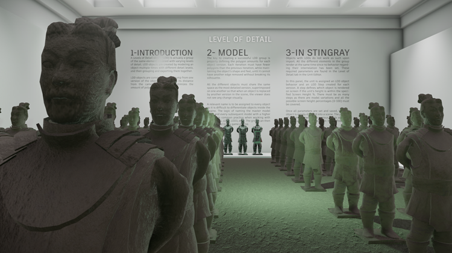
Levels of Detail (LODs) let you associate multiple versions of the same geometry to be replaced in your game based on a certain threshold value. This lets you produce a high-quality version of a model for up close and a low-quality version for far away, with multiple versions in between. You can create an LOD object using 3d modeling software (Maya, Maya LT), and then import it into Stingray.
Objects respecting these guidelines can be exported from your modeling software as a group to Stingray.
By default, the Stingray engine renders all of the objects simultaneously. Parameters called LOD steps must be set within the LOD object to tell Stingray which object to render at each screen height percentage.
The step range is a percentage of the screen height. For example, a step range of 80-100 is the highest resolution, when your object takes up most of your screen.
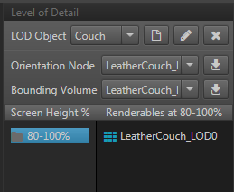
Together, all of the ranges should cover every possible screen size the unit can have, ranging from 0% to 100% of the screen height.
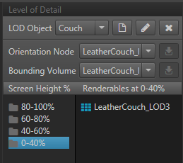
Zoom in and out with the camera (scroll wheel or Alt + right-drag) to see the LOD geometry switching.
Applying a texture to an object is relatively simple because UV coordinates can be used to project the texture's pixels onto the object's surface. The challenge with light-based materials is that they are based on light sources, which do not have UV coordinates. Controlling intensity variations inside a light using texture masks can help produce interesting effects. The following steps explain how to create a custom material for light sources, so they can support textures masks.
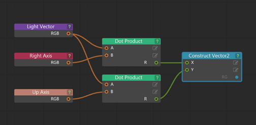
The Light Vector node provides information about the light's direction as a normalized vector in world space. We need XY values to map our texture as though it was on a canvas. The Light Vector node only gives us vectors with directions and forces coming out of a single point. The Dot product and Construct Nodes take these outgoing vectors and project them back onto the imaginary canvas.
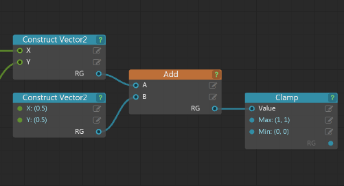
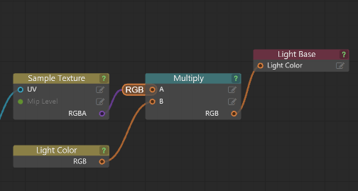
Directly connecting the texture to the Light Base material's Light Colour node overrides its colour and intensity, creating a very weak light. Multiplying the texture by the Light Colour creates a strong light.
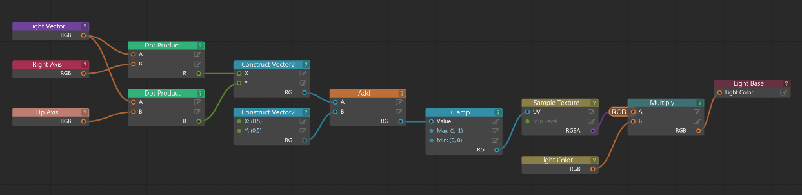
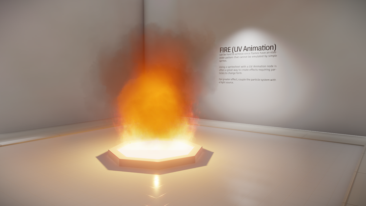
Particle systems can be used to add an atmospheric layer, like rain or fog, to a scene. Fire is a complex element requiring multiple particle systems and other units to function properly: flames, smoke, and wind. Together, these systems work together to create a believable fire.
For a full tutorial on creating particle effects, see Creating Particle Effects.